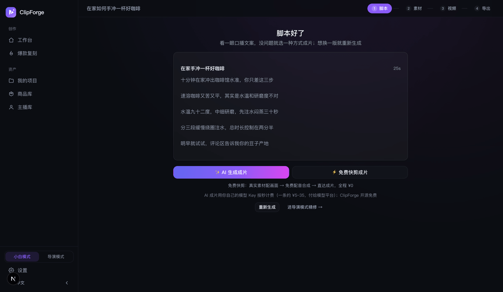

ClipForge 使用手册:从安装到第一条 AI 带货视频
先说结论:装好后 3 分钟、0 元就能出第一条无水印带货视频。ClipForge 是开源(AGPL-3.0)的 AI 带货短视频工具——上传商品图或说一句话主题,AI 写脚本、配画面、配音、合成竖屏成片。本手册覆盖安装、免费出片、AI 成片、带货形式、双模式、爆款复刻、批量与合规发布的完整流程,中英双语界面通用。
一、安装:三种方式任选
方式 1:桌面版(最简单)
到 GitHub Releases 下载 macOS .dmg / Windows .exe / Linux .AppImage(Linux 包自 v0.8.90 起提供),双击即用,数据全部保存在本机。
方式 2:Docker 一行命令
docker run -d -p 3000:3000 -v clipforge-data:/data ghcr.io/xixihhhh/clipforge:latest打开 http://localhost:3000 即可。
方式 3:源码运行(开发者)
git clone https://github.com/xixihhhh/clipforge.git
cd clipforge && pnpm install && pnpm dev源码运行需要本机装有 FFmpeg(免费合成链路用它出片,brew install ffmpeg / apt install ffmpeg);桌面版与 Docker 镜像已内置,无需自己装。源码必须用 pnpm,用 npm install 会报错。
装完打不开?先过系统拦截(不是病毒,是应用没买签名证书)
- macOS「无法验证开发者」:在「应用程序」里右键 ClipForge →「打开」,再点一次「打开」——只需一次。提示「已损坏」时终端执行
xattr -cr /Applications/ClipForge.app。 - Windows「Windows 已保护你的电脑」:点「更多信息」→「仍要运行」。
- Linux AppImage 双击没反应:
chmod +x ClipForge-*.AppImage后再运行。
装好了没?两秒自检
网页/Docker 打开 http://localhost:3000/api/health,看到 "status": "ok" 即成功;桌面版进「设置 → 系统诊断 → 查看诊断信息」。这两处不含任何密钥,报障时可直接截图。
二、3 分钟出第一条片:免费快剪(全程 0 元)
打开工作台,你只需要回答两个问题——输入什么和怎么出片:
- 把商品丢进来:上传商品图(最多 5 张)、粘贴商品链接(自动抓标题/价格/主图),或点「一句话成片」直接说主题,比如「3 个让租房变高级的小物」。没素材?点示例商品直接试。
- 出片方式保持默认「🆓 免费快剪」:真实图库素材混剪 + 免费 AI 配音,全程 ¥0,约 2 分钟。
- 点「开始生成」——写脚本 → 免费素材配画面 → 配音合成,一张进度卡全程托管,完成后直达成片页下载。

唯一的前置项:写脚本需要一个 LLM Key(任何 OpenAI 协议平台都行,DeepSeek 单次约 ¥0.001;推荐 Atlas Cloud,一个 Key 后面 AI 生成也全够用)。第一次点生成时页面会内联引导粘贴,不用跳设置。
三、配一个 Key,解锁 AI 生成
ClipForge 是开源 BYOK(自带 Key)工具:软件永远免费,AI 用量按秒付给你选的模型平台,我们不加价不抽成。一个接口聚合 7 大平台 30+ 模型:
- Atlas Cloud(推荐):一个 Key 覆盖脚本 + 生图(GPT Image 2)+ 视频(Seedance 2.5/2.0 全系)+ 配音,在 设置 → 平台 Key 粘贴即完成;
- 也支持火山方舟、fal.ai、OpenAI、DeepSeek 等,设置 → 生图模型 / 视频模型 里各选一个默认模型即可;
- 模型清单运行时自动拉取,新模型上架即可用,还能添加自定义模型 ID。
四、免费快剪 vs AI 生成成片:怎么选
| 🆓 免费快剪 | ✨ AI 生成成片 | |
|---|---|---|
| 画面来源 | 免费图库真实素材混剪 | AI 按分镜生成画面与人物口播 |
| 费用 | ¥0(配音/素材/合成全免费) | 按秒计费:12s 整片实测约 ¥26(Seedance 2.5);便宜档约 ¥2~5/条 |
| 耗时 | 约 2~3 分钟 | 约 4~8 分钟 |
| 适合 | 话题种草、日更跑量、先试试 | 商品出镜、真人口播、追求质感 |
| 需要的 Key | 仅 LLM(写脚本) | LLM + 生图 + 视频模型 |
AI 档花钱只有一次点击:脚本免费生成后停在「脚本好了」页,看完口播文案、确认没问题,点「AI 生成成片」才开始计费——自动跑 九宫格分镜(一次生图把所有镜头的人物/房间/光线锁死)→ 一键整片(Seedance 2.5 原生切镜,台词由人物原声逐字说出)→ 直达成片页。

五、带货形式与主播库
选了 AI 档后再选带货形式(免费档不用选——通用素材混剪选了也不生效):
- 智能推荐(默认):AI 按商品挑风格,以实物展示为主;
- 真人口播:AI 素人对镜口播种草,内置真实感规则(口语台词、生活痕迹背景、行为节拍),不出「一眼假」网红脸;
- 情景短剧:有人物有剧情的种草小短剧,多角色各配专属音色;
- 图文混剪:节奏卡点的图文快剪。
选真人口播/情景短剧时可指定出镜主播:在「主播库」自建形象,一键生成正/侧/背/特写四视图定妆照(一次生成保证同一个人),之后九宫格与整片都拿定妆照当身份锚——跨镜头、跨条视频不换脸。
六、小白模式与导演模式
侧边栏底部一键切换:
- 小白模式(默认):只有工作台一条创作路,脚本→成片全托管,不见分镜不见术语;
- 导演模式:解锁全部专业工具——分镜逐条编辑、判官团(四位毒舌判官撕台词并等长重写)、逐镜运镜(18 款预设 + Mix 叠加)、画面 Look、九宫格、一键整片、高级新建(品类/人群/平台/391 款成片模板逐项可调)、变体矩阵 A/B。

六·B、媒体解构与生产控制台（导演模式，v0.9.1）
这两处工具适合需要控制成本、保持跨镜头一致性或反复迭代版本的创作者，不会打扰默认的一键出片路径。
- 先解构素材：侧边栏进入「媒体解构」，上传任意图片或视频。系统会识别主体、光线、色彩、构图、镜头语言与节奏，并生成可继续使用的提示词；选中项目后可直接保存为项目洞察。
- 建立项目视觉记忆：在项目素材页进入「生产控制台」，填写核心主体、动作、环境、镜头语言，以及人物 / 商品 / 服装锚点和禁止变化。它们会进入真实生图与图生视频请求，而不只是备注。
- 看清工作流与费用：控制台展示九阶段工作流、每阶段执行位置与是否付费；费用按当前模型目录显示区间，未知价格不会伪装成精确数字。可按均衡、低成本、速度、质量或一致性应用推荐模型。
- 让模型吃对参考：逐镜生成会自动组合关键帧、人物定妆、商品原图与前镜真实尾帧，再按当前模型能力选择多参考或首尾帧路径。支持原生音频时，同一次生成会绑定逐字对白、口型、环境声与物体声；不支持的输入会在请求前降级，不会拿错误参数试错扣费。
- 逐镜验收生成质量：新生成不会覆盖旧候选。展开「镜头质量闸门」，可让视觉模型按画面质量、视频时序、分镜遵循、人物 / 商品保持、动作关系、跨镜连续和文字标识逐维检查；视频会按场景抽取多帧，问题带具体时间点。机器只给分数、置信度与可核对证据，由你决定采用或不采用。
- 只修坏掉的时间段：在已评估的视频候选下展开「精准修复」。系统会按问题时间点建议起止区间，也可手动调整并追加人物、商品、构图或连续性时间锚点。先生成免费预演，核对实际修复窗、模型计费时长、费用、参考数量和降级说明；勾选费用确认后才会提交。修复结果只替换对应时间段，原镜头音频与旧候选都保留，远端已完成但本地拼接中断时可在素材页继续收尾。
- 预览、快照与修复：创建快照保存当前脚本/素材/成片关系；「快速预览」使用本地 720p / veryfast 档，不重新生成 AI 素材；成片后运行 QC，免费合成问题可确认后一键生成修复版再复检，涉及付费重做的镜头只给计划、不自动扣费。
- 检查切点并制作母版：在生产控制台的「成片连续性与母版」先点分析。系统会读取真实时间线切点（旧成片则自动检测场景），比较切点前后亮度、色度与饱和度，并测量整片响度；有风险才展开具体时间点。分析不调用模型、不改成片。需要时可显式选择两遍响度标准化；只有确认存在时间闪烁时才开启去闪烁，因为它会重编码画面。处理结果始终保存为新的成片版本。
采用才生效：人工采用的候选会成为该分镜的实际合成素材；旧候选仍保留，可随时比较或切回。项目里的真实验收成绩会在样本足够后参与模型推荐，但重生成与换模型永远只给建议，不会自动扣费。
六·C、片段工作台与批量文字剪辑（v0.9.2）
- 项目素材页点「按文字剪视频」，导入 MP4 / MOV / WebM / MKV / M4V（最大 1GB）。
- 选 Tiny（轻量）、Base（均衡）或 Small（实验档）开始本地转写。最长 2 小时素材按 5 分钟分块处理，内存占用不随时长增长；可随时取消并从最近检查点继续，旧稿在新稿完成前保持可用。模型首次下载后会缓存；优先 WebGPU，不支持时自动切兼容模式。
- 片段工作台支持按原话和目标时长查找片段，试听后采用，也可手动输入区间。长转写稿分段显示，支持全文搜索和定位播放处；「字幕校对」可修正商品名等词组，随版本保存。
- 多选批量输出：为最多 12 条片段命名，预演每条时长后加入队列。版本卡片显示进度，可单独取消和按原计划重试；服务中断后保留转写快照，任务中心可回到对应素材。
- 点文字切换保留 / 删除，也可批量标记口头禅和静音。播放时会自动跳过删除段；时间线、预计时长、撤销 / 重做都是即时的。
- 先点「预览修改」检查删词、区间和缩短时长，再确认生成新版本。SRT / VTT / JSON 可直接交付字幕与计划；OTIO 保留可编辑音视频切片，EDL 适合传统剪辑软件，CSV 带源/成片时间码和逐段文字用于审阅。MCP / CLI 同样支持导出。
重链素材：专业时间线只写原文件名，不写本机绝对路径。导入 Premiere、Resolve 或其他剪辑软件后，按原文件名选择一次素材即可重链。
六·D、本地素材库（v0.9.3）
- 在素材页展开「本地素材库」，每次上传最多 12 个图片或视频，每个不超过 80MB。支持 MP4 / WebM / MOV / M4V / JPG / PNG / WebP。
- 上传显示进度和文件检查状态，可以取消或只重试未完成项；相同内容会复用已有文件，保留已编辑的名称与标签。
- 按名称或标签搜索，按图片/视频筛选，按上传时间或名称排序。预览后选择分镜并点「用于该镜」，旧版本仍可在质量台切回。
- 「用本地素材补齐空镜」只读取本项目素材，不调用模型或联网素材源。已完成和进行中的已选素材、商品原图镜头会跳过；失败记录与未选中的旧版本不会阻止补齐。
七、爆款复刻与热点选题
- 爆款复刻:上传一条参考爆款视频,解析它的镜头切点与节奏,用你的商品重新生成同结构视频;也支持模型级 reference-to-video 直接换品复刻(注意素材授权,风险自担);
- 今天发什么:工作台热榜实时拉抖音热搜(已过滤时政类),点热点直接写成视频,每条带「同款」直达复刻;
- 按人设日更:填人设关键词自动选题,配合 cron + CLI 就是全自动日更机。
八、批量出片 / MCP / CLI
- 批量出片(导演模式):大促前 10 个商品一键排队出片;
- MCP Server:在 Claude / Cursor 等 agent 里接入
clipforge-mcp,贴商品链接一句话出片; - CLI:
node bin/clipforge.mjs create --topic "..."脚本化出片,适合定时任务。

九、导出与合规发布
- 成片页直接下载 1080p 无水印 MP4;抖音 9:16 / 小红书 3:4 等规格一键切换,附标题/话题/封面文案包;
- 合规默认开:AIGC 隐式标识自动写入(对齐国标 GB 45438-2025)+ 显式「AI 生成」角标默认烧录;
- 发布前限流自检:风险词、钩子、时长、字幕、CTA 逐项检查并给出改法;广告法违禁词扫描附替换建议。

十、出问题了怎么办(报错自查表)
| 症状 | 多半是 | 怎么修 |
|---|---|---|
| 「尚未配置 LLM，请先到设置填写 API Key」 | 没配写脚本的 Key | 设置 →「脚本模型」点快捷预设 + 填 Key,点「测试连接」 |
| 测试连接失败 / 401 | Key 填错或带空格 | 重新复制粘贴;402 是平台没余额,404 是模型名写错(点「读取可用模型」从列表选) |
| 「还没配好生图/视频模型」 | AI 档缺模型 | 设置 →「生图模型」「视频模型」各选一个,或直接接 Atlas 一个 Key |
| 模型下拉框是空的 | 该平台 Key 没填或无效 | 先在「平台 Key」里填好 Key,模型列表会自动出现 |
| 没能从商品链接抓到信息 | 该站点反爬 | 改用「上传商品图」建项目 |
| 成片没有声音 | 配音被关了 | 视频页 →「配音 (TTS)」→ 打开「启用自动配音」 |
| 字幕是方块/乱码 | 自建环境缺中文字体 | 用官方 Docker 镜像(已内置字幕字体),或给系统装中文字体 |
| 合成失败、日志提到 drawtext | FFmpeg 构建缺 drawtext 滤镜 | 用系统包管理器装的 FFmpeg,别用缺 harfbuzz 的静态构建 |
| 重启 Docker 后项目全没了 | 没挂数据卷 | run 时一定要带 -v clipforge-data:/data |
| localhost:3000 打不开 | 端口被占 | PORT=3001 pnpm dev;Docker 改成 -p 8080:3000 |
更长的排错清单(含 npm/pnpm、better-sqlite3、卡在生成中等)见完整教程第 11 节。
十一、数据存在哪、怎么备份
项目、商品图、成片全部在你自己机器上,不上传任何服务器:
- macOS 桌面版:
~/Library/Application Support/ClipForge/data - Windows 桌面版:
%APPDATA%\ClipForge\data;Linux 桌面版:~/.config/ClipForge/data - 源码运行:项目目录下的
data/;Docker:数据卷clipforge-data(容器内/data)
目录里是 sqlite.db(项目库)、uploads/(你上传的图)、output/(成片)。备份或换电脑:整个 data 目录复制走即可。Key 存在本地设置里,诊断信息与日志都不含密钥。
十二、常见问题
完全不花钱能出片吗?
能。免费快剪档 = 免费素材 + 免费 Edge TTS 配音 + 本地 FFmpeg 合成,1080p 无水印不限条数;只有写脚本要一个 LLM Key(DeepSeek 单次约 ¥0.001)。
AI 生成一条多少钱?
按秒计费、标在选项上:九宫格一次生图约 ¥1.3,Seedance 2.5 整片 12 秒实测约 ¥26;换 Mini 档约 ¥0.28/秒,一条 8 秒约 ¥2.2。脚本确认后点一次才产生费用,按量付给模型平台。
真人口播需要真人拍吗?
不需要,AI 生成素人对镜口播,原声逐字说台词、口型对齐;主播库定妆照可跨视频锁脸。
生成失败会白花钱吗?
不会。免费链路随便重试;AI 链路两阶段任务表,已提交的云端任务可在素材页恢复领取,不重复扣费。
数据存在哪里?
全在本机(SQLite + 本地文件),不上传任何服务器;自部署 Docker 同理。
手册没覆盖的问题去哪问?
去 GitHub Issues 或 Discussions,中英文都可以。